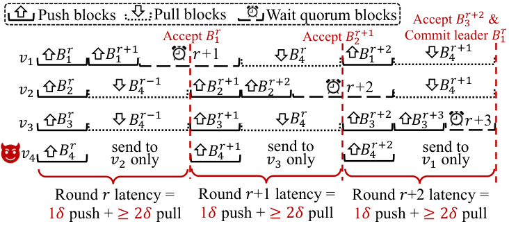
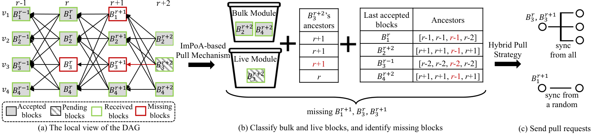
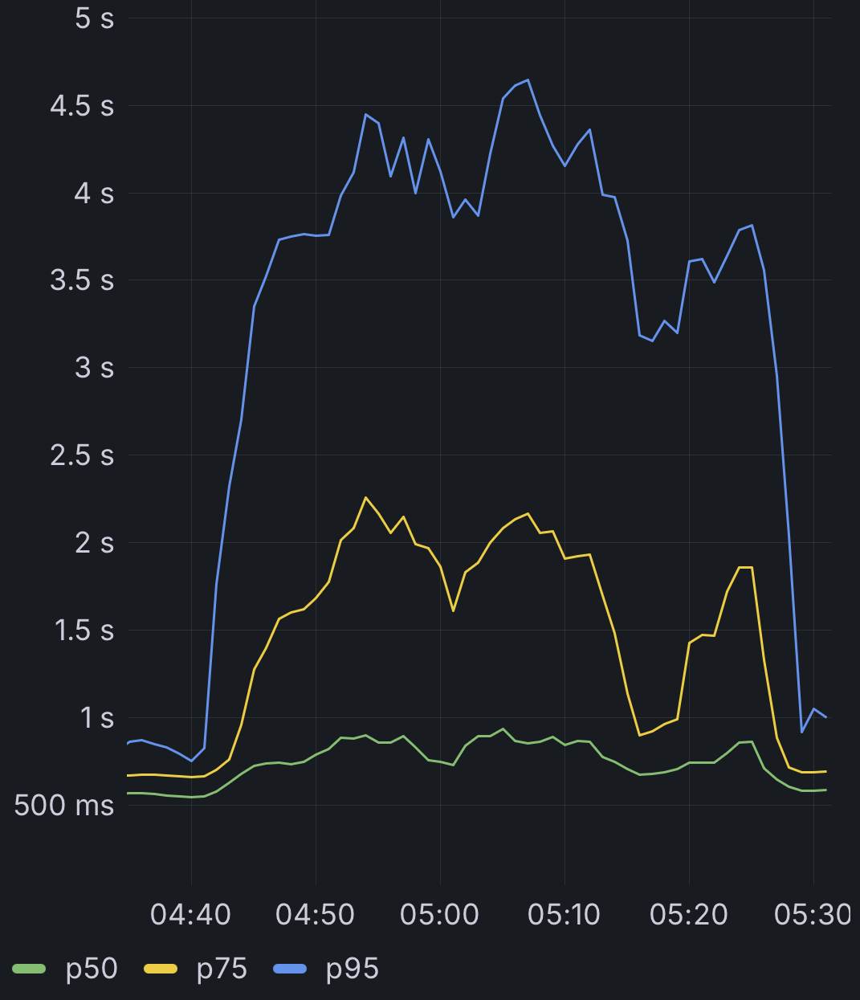

The block-synchronizer correctness theorems (block and causal availability) are formalised in Lean, with machine-checked proofs and the code provided as accompanying material.
Abstract
Modern high-throughput BFT consensus protocols use streamlined push-pull mechanisms to disseminate blocks and keep happy-path performance optimal. Yet state-of-the-art designs lack a principled and efficient way to exchange blocks, which leaves them open to targeted attacks and performance collapse under network asynchrony. This work introduces the concept of a block synchronizer, a simple abstraction that drives incremental block retrieval and enforces resource-aware exchange. Its interface and role fit cleanly inside a modern BFT consensus stack. We also uncover a new attack, where an adversary steers honest validators into redundant, uncoordinated pulls that exhaust bandwidth and stall progress. Beluga is a modular and scarcity-aware instantiation of the block synchronizer. It achieves optimal common-case latency while bounding the cost of recovery under faults and adversarial behavior. We integrate Beluga into Mysticeti, the consensus core of the Sui blockchain, and show on a geo-distributed AWS deployment that Beluga sustains optimal performance in the optimistic path and, under attack, delivers up to 3x higher throughput and 25x lower latency than prior designs. The Sui blockchain adopted Beluga in production.
Problem
High-throughput BFT consensus protocols use push-pull block dissemination but have no principled, efficient way to exchange missing blocks. This leaves them open to targeted attacks and performance collapse under network asynchrony.
Approach
The authors define a block synchronizer abstraction and identify pull induction attacks, in which an adversary selectively shares blocks to force redundant pulls. Beluga instantiates the abstraction with an admission-control-based optimistic push and a hybrid pull based on Implicit Proof-of-Availability. Its correctness properties, block availability and causal availability, are proven with machine-checked Lean proofs. Beluga is integrated into Mysticeti, the consensus core of Sui.

Figure 2 . The pull induction attack: by selectively sharing its blocks (e.g. v_{4} sends B_{4}^{r{-}1} only to v_{1} , so B_{1}^{r} references it), the adversary forces honest validators to trigger pulls to fetch the referenced parents, adding at least one pull round-trip of latency per round.

Figure 3 . The ImPoA-based hybrid pull protocol for v_{4} : (a) v_{4} accepts B_{2}^{r{+}2} and B_{4}^{r{+}2} whose parent B_{1}^{r{+}1} is only implicitly available (both reference it); (b) it advertises the blocks referencing missing ones to the bulk and live synchronizer modules, identifying the blocks to fetch; (c) it fetches them via a hybrid pull that balances latency and complexity.
Results
On a geo-distributed AWS deployment, Beluga matches baseline performance in the optimistic path. Under attack it delivers up to 3x higher throughput and 25x lower latency than prior designs. Sui deployed it on mainnet in January 2025.

Figure 1 . Latency of the Sui blockchain under network attacks before (left) and after (right) deploying Beluga.